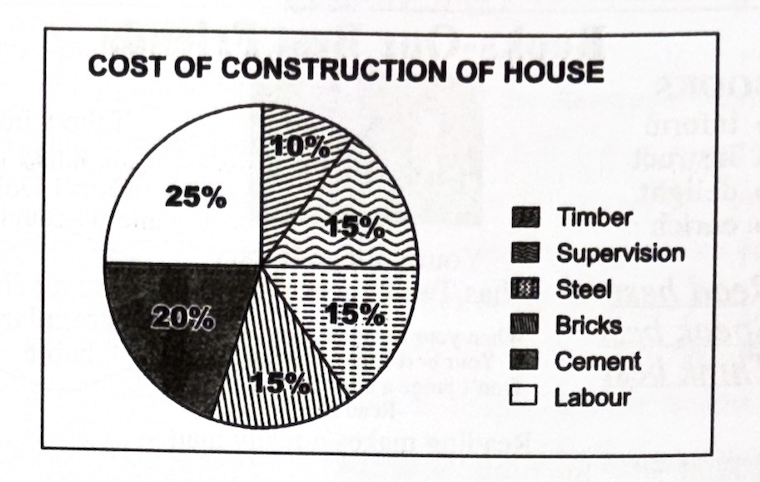
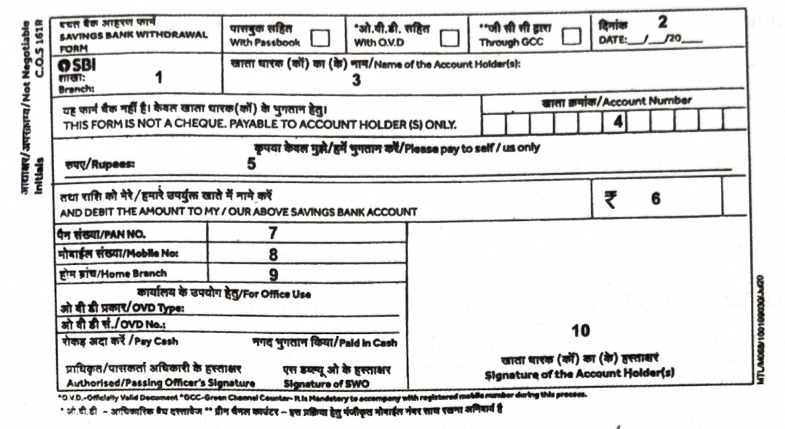
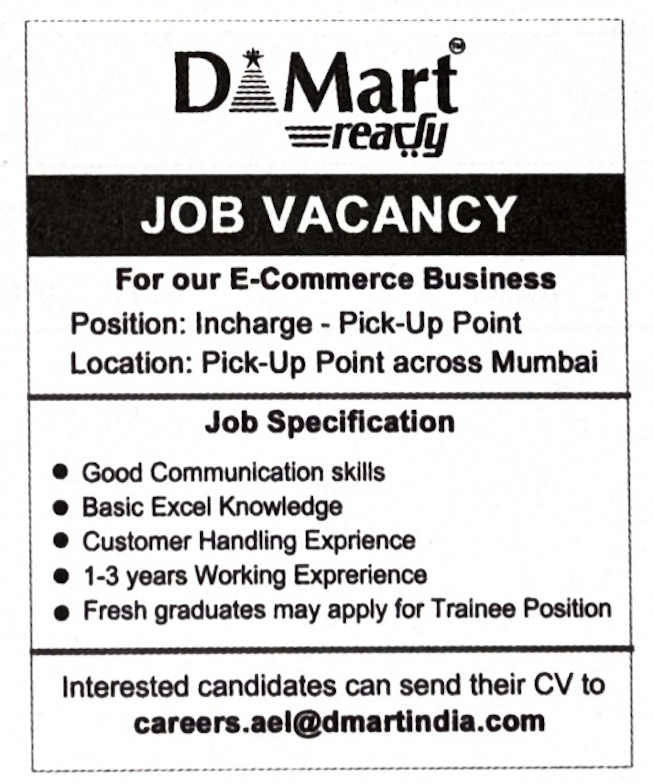

4. Read the following passage and answer ANY FOUR questions given below.
4 × 1 = 4M
As it approached, the boy jumped off the platform and ran across the tracks to the next platform. He was at a safe distance from the train and there was no danger unless he had fallen. But as he leapt across the tracks, the woman with me gripped my arm. Her fingers dug into my flesh painfully. I looked up at her. Her face was filled with pain and fear, and then sadness swept over her eyes. She watched the boy until he disappeared in the crowd and only then she relaxed her hold on my arm. She smiled at me, took my hand again, but her fingers trembled against mine.
“He was all right,” I said, feeling that she needed reassurance.
i) What did Arun see when a train approached?
ii) What was the woman’s reaction on seeing the boy leap across the
tracks?
iii) What type of emotions did the boy observe in her face?
iv) Why do you think sadness swept over her eyes when a boy was in
danger?
v) How long did she watch the boy?
vi) Only after the boy disappeared that she relaxed. Write true or
false.
vii) “She relaxed only after the boy safely disappeared into the crowd.
The boy here is Arun.” Write true or false.
5. Read the following passage carefully and answer ANY FOUR questions given after it in a word or in a sentence each.
4 × 1 = 4M
The title sounds strange but the people who visit the Ramappa Temple and see the statues there can feel the Monumental Dance and affirm that it is not an exaggeration. The temple is located at Palampet, a village 70 km from Warangal in Telangana. The presiding deity is Lord Ramalingeshwara Swamy but it is named after the sculptor Ramappa who gave the structural form to the dance patterns recorded in the book Nritiya Rathnavali, written by Jayapa Senani, a military commander. Built by Kakatiya Ganapathi Deva in 1213 AD, it features construction techniques unique to the Kakatiya dynasty i.e., Sand Box technique, Granite Beams and Pillars, Vimana Gopuram etc. On 25th July 2021, the temple, the first from the Telugu states, was recognised by the UNESCO as a World Heritage Site. With this recognition its majesty and grandeur have become known worldwide, a moment of pride for all Telugu people.
i) Where is the Ramappa Temple located?
ii) Under whose reign was the temple built?
iii) What is the book Nritiya Rathnavali about? Who wrote this?
iv) What was Jayapa Senani?
v) What are the unique features involved in the construction of Ramappa
temple?
vi) How was the temple recognised by the UNESCO?
vii) It is one of the World Heritage Sites from the Telugu states. Write
true or false.
viii) Find the word from the passage that means God.
6. Study the advertisement given below and answer questions given after it.
4 × 1 = 4M
i) How many books does the college library have?
ii) What are the two advantages of books mentioned in the advertisement?
iii) Name the habit stated in the advertisement.
iv) How do people normally judge a book?
v) When is the International Book Day celebrated?
vi) Expand N-LIST.
vii) What does the advertisement describe?
viii) What is the motto of N-LIST?
7. Read the pie chart below and answer questions given after it.
4 × 1 = 4M

i) What does the pie chart show?
ii) How many categories are presented in the pie chart?
iii) What portion of the total cost is spent on cement?
iv) What portion of the total cost is spent on bricks?
v) If the owner himself had supervised the construction of the house,
what percentage of amount would he have saved?
vi) The cost spent on timber is 10%. Write true or false.
vii) If the cost of steel were lower than timber and the engineer had
decided to use steel instead of timber, would the cost of entire house
go down or go up?
viii) What percentage of the cost is spent on supervision?
8. Rewrite the following passage/sentence using punctuation marks wherever necessary.
8 × ½ = 4M
Aristotle could have avoided the mistake of thinking that women have fewer teeth than men by the simple device of asking Mrs. Aristotle to keep her mouth open while he counted.
9. Match the following words in Column-A with their meanings or definitions in Column-B.
4 × 1 = 4M
| Column A | Column B |
|---|---|
| i) bouquet | a) one who never takes alcoholic drinks |
| ii) drought | b) having unlimited power |
| iii) glossary | c) something kept in the memory of an event |
| iv) memento | d) a list of terms in a text with explanation |
| v) omnipotent | e) a bunch of flowers tied together to be given as a present or to welcome someone |
| vi) teetotaler | f) prolonged period of abnormally low rainfall |
10. Fill the blanks in the following sentences with suitable idiomatic expressions given below. Make necessary changes in the idioms if needed.
4 × 1 = 4M
| on cloud nine | tie the knot | go the extra mile |
| a piece of cake | turn a deaf ear | hot cakes |
1) The new model cars are selling like __________________________.
2) My father always __________________________ to help the needy.
3) Rahul is __________________________ since he got a good job.
4) Batting is __________________________ for Virat these days.
5) The couple __________________________ last year.
6) Our boss __________________________ to our request to change the meeting venue.
11. Make four meaningful sentences based on the verb patterns given below.
4 × 1 = 4M
An example is given as a model.
| Subject | Verb | Complement |
|---|---|---|
| My grandfather | looks | very healthy. |
1) ____________________________
2) ____________________________
3) ____________________________
4) ____________________________
12. Fill in the blanks of the given bank form based on the information furnished below.
8 × ½ = 4M
You are Ch. Gopi Krishna. You have a Savings Bank Account in the SBI Hanumakonda Main Branch. Your account number is 52738963762 and PAN is BCKPC2356P. Withdraw an amount of Rs. 25000/- today by filling the Savings Bank Withdrawal Form.
1) ____________________________
2) ____________________________
3) ____________________________
4) ____________________________
5) ____________________________
13. Prepare a Curriculum Vitae in response to the following advertisement.
1 × 4 = 4M
14. Write a letter to the editor of a reputed National Daily highlighting the need to spread the message the Statue of Equality seeks to promote.
1 × 4 = 4M
(HINTS: Its importance – Dedicated to humanity by the Prime Minister – First Pooja offered by the President of India – Recorded in the World Book of Records, London)
(OR)
Imagine you have received information from the Ministry of Education that you have secured the fifth place in the Innovative Challenges Competition. Write a letter to your friend describing your success.
15. Read the following passage and make notes. Add a suitable title.
1 × 4 = 4M
It is observed that most educational institutions believe online classes as the only solution during this pandemic. In contrast, researcher Eric Bettinger Susanna Leob’s work Promises and Pitfalls of Online Education shows that online teaching may raise dropouts at primary and upper primary levels.
It is observed from the survey report that online classes are suitable for classes 8 and above. It is beneficial to the one who can afford, but detrimental to the one who cannot afford it. This reflects adversely for primary classes. Most of the rural and BPL parents may not afford mobile phones, network charges, computers and even TV sets. This may lead to discrimination. Parents are not educated on cyber security and it may create a mess for parents as well as students. Our education system exists on the same planet as we are and is affected by the conditions around us as we are. Primary victims of online classes are rural students, particularly in the public sector. Most of the government school students from rural and interior areas can neither afford technology nor have parental support. It is the misfortune of these innocent kids. The system has to be considerate to them.
16. Mark the stress for any EIGHT of the following words.
8 × ½ = 4M
i) collector
ii) centre
iii) created
iv) continue
v) character
vi) comfort
vii) certificate
viii) confusion
ix) century
x) director
17. Prepare a dialogue between yourself and your father discussing the secrets of success in business.
1 × 4 = 4M
(OR)
Write a dialogue between a parent and a teenager who is watching TV most of the time.